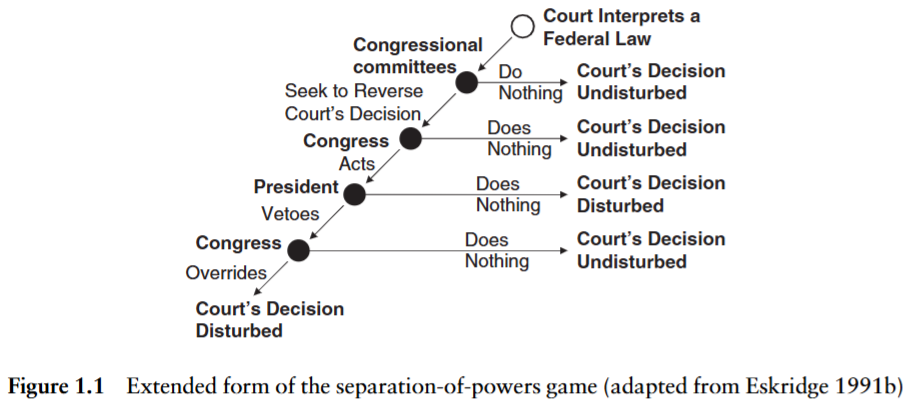
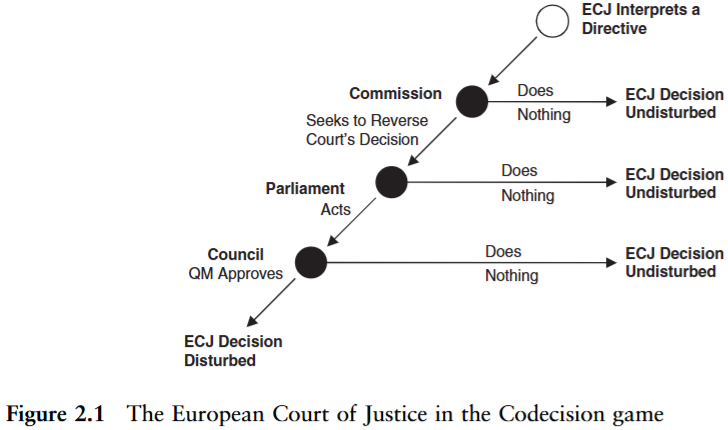
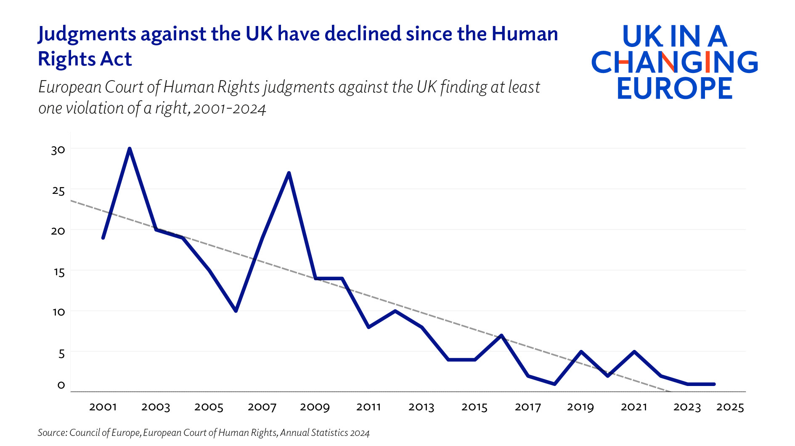

Court Curbing, Backlash and Backsliding
Week 7
Strategic interactions
How do courts, executives and legislatures interact in the enactment and enforcement of policy?
How does strategic anticipation of mutual preferences affect how they behave?
And what happens when elected politicians decide to push back against courts?
Anticipation
Judicial review
constitutional (and sometimes ordinary) courts have in many jurisdictions the power of judicial review
the legislating body knows its acts can be reviewed
courts depend on the executive branch for enforcement
- public support for courts makes enforcement more likely
Anticipating judicial review
in general, legislators want to avoid having their laws struck down by judges
what is the chance the act will be reviewed?
- shaped by rules on jurisdiction and judicial review
what is the chance the act will be overturned?
- shaped by distance between legislator and court
Anticipating judicial review
the legislature only needs to fear the courts when judicial review is likely to happen
in some countries this is virtually guaranteed (e.g. US), while elsewhere there will be more uncertainty
in the EU, if all political actors agree, there is very low chance of review
whether review happens at all can depend on how policy makers write the policy – this week’s reading on the shadow effect
Anticipating judicial review
the legislature only needs to fear the courts when they prefer to overturn an act
the legislature will look for information on:
the court’s previous case law
judges’ ideological positions
public support
Anticipating judicial review
in reality, no actor has complete and perfect information about the judicial review game
there is uncertainty about how the courts will react
actors sometimes behave irrationally
the legislator might water down an act or otherwise preempt negative judicial action
Anticipating judicial review
in some cases, the legislator will not shy away from judicial conflict (Schroeder 2022)
when they have strong public support (Vanberg 2001; Krehbiel 2016)
when they signal intention to not comply
Anticipating reactions
courts have also reasons to fear confrontation
non-compliance undermines their power and legitimacy
may trigger court curbing by the other branches
just like legislatures do not want to be censored by courts, courts do not want to be overridden by legislatures
(Non-)Compliance
due to courts’ enforcement-dependency, non-compliance is an attractive strategy for other actors (especially other branches of power)
- but non-compliance can itself generate more litigation
in most cases it is less costly for the government/legislator to evade compliance implicitly
- e.g. creating a parliamentary working group but never delivering (Vanberg 2001)
Threat of override
courts may also take into account whether their decision is likely to be overridden by the legislature (Meernik and Ignagni 1997; Larsson 2021)
- though the empirical evidence of override anticipation by courts is mixed (Segal 1997; Segal, Westerland, and Lindquist 2011)
courts are looking for judgments which are as close as possible to their ideal point but not so far as to get overridden
Threat of override

US Override Game from Dyevre (2010)
Threat of override

EU Override Game from Dyevre (2010)
The override incongruity
the literature leans heavily on the threat of override: courts anticipate it, and the CJEU visibly responds to member-state signals of displeasure (Larsson and Naurin 2016)
yet actual overrides of CJEU rulings are close to non-existent: treaty-based rulings need treaty change, the rest a coalition that rarely forms (the joint-decision trap)
- in EU social policy, codification and override are both rare
the US is the mirror image: Congress overrode Supreme Court statutory decisions routinely in the 1970s and 1980s (Eskridge 1991; Uribe, Spriggs, and Hansford 2014), a record that has thinned since (Christiansen and Eskridge 2014)
so the system where override is least feasible is the one where the court looks most responsive to it
observational equivalence: zero observed overrides is consistent with perfect anticipation and with no constraint at all; only variation in signals, or the rare off-path case, can tell them apart
The friendly court
consistent with the idea of the majoritarian court is evidence of courts ruling against policies of previous governments (Segal, Westerland, and Lindquist 2011; Gillman 2002)
a “friendly” judicial intervention can be particularly valuable when it concerns constitutional interpretation that would be otherwise difficult to legislate away (e.g. Roe and Dobbs)
also helps explain why governments might sometimes appear to support “activist” judiciaries (Whittington 2005)
Curbing
Court curbing
the legislator signaling intent to engage in court curbing is likely to lead to judicial self-restraint
a number of possible measures:
budget and staffing cuts
induced judicial exits (e.g. lowering retirement age)
court expansion and packing
limiting jurisdiction and powers
The court-curbing toolkit
| target | tools |
|---|---|
| composition | adding seats (packing), retirement-age cuts, captured appointment bodies, transfers and reassignments |
| jurisdiction | stripping subject matter, restricting standing, ouster clauses, moving disputes to special tribunals |
| operation | budget and staff cuts, disciplinary regimes, powers of court presidents, caseload manipulation |
| decisions | legislative override, constitutional amendment, non-compliance, refusal to publish rulings |
| legitimacy | rhetoric (“enemies of the people”), delegitimization campaigns, judicial elections, leaks |
- the tools are old; in the 2010s they were used together and openly
Ten years of attacks on courts
| case | tools | outcome |
|---|---|---|
| Hungary 2010-13 | budget-law jurisdiction stripped, court enlarged, retirement age cut, earlier case law annulled | captured |
| Poland 2015-23 | judges left unseated, judicial council captured, disciplinary chamber, retirement age cut | tribunal captured, Supreme Court contested, EU sanctions |
| Turkey 2010, 2016 on | referendum reshaped court and council; over 4,000 judges and prosecutors dismissed | captured |
| Venezuela 2004 | Supreme Tribunal enlarged from 20 to 32 | captured |
| El Salvador 2021 | constitutional chamber removed on the new majority’s first day | captured |
| Israel 2023 | reasonableness standard abolished | struck down in 2024 after mass protests |
| United States 1937, 2020s | plan to add six justices; expansion commission | failed; no expansion |
| United Kingdom 2016-22 | “enemies of the people” campaign; limits on judicial review remedies | rhetoric loud, curbing modest |
Why attack, why refrain, how courts respond
why attack
to signal to the court that its legitimacy is at risk and induce restraint (Clark 2009)
to remove a check on the way to power or survival: abusive constitutionalism (Landau 2013) and autocratic legalism (Scheppele 2018) use legal forms to dismantle legal limits (Castillo-Ortiz 2019; Bugarič and Ginsburg 2016)
to retaliate against judges who defect from a weakening government (Helmke 2002); populism supplies the vocabulary (Voeten 2020)
why refrain
electoral costs, if voters punish attacks (this week’s reading)
international audiences: the EU’s tools below, the ECtHR, investors
insurance: today’s majority is tomorrow’s minority
how courts respond: defect from a weakening government (Helmke 2002); restrain themselves (this week’s ECtHR reading); resist openly (Polish judges’ associations, Kenya’s 2017 election annulment); exit through resignations and early retirements
Reading a conjoint experiment
how do we know whether voters punish attacks on courts? ask them, but not directly
a vignette experiment shows respondents a short scenario, say a government proposal to cut a court’s jurisdiction, with one detail randomized, such as which party proposes it
a conjoint randomizes several attributes at once (tool, justification, proposer, the court’s popularity) and asks respondents to choose between two profiles
- the average marginal effect of each attribute is the causal estimate
Aydin-Cakir and Driscoll (2025) use survey experiments to show that how a court-curbing measure is justified, and the approach taken, change how much public trust it costs
the design isolates causal effects at the cost of realism: respondents react to hypothetical proposals with nothing at stake
Backlash and backsliding
Backlash
Daily Mail re Brexit judgment in Miller (2016)
Backlash against courts
what drives backlash against international courts?
probably the same thing that drives backlash against domestic courts: disagreement with outcomes
populism is at best a partial explanation (Voeten 2020)
this week’s backlash is political backlash against courts, not backlash in public opinion
Backlash against courts
evidence of greater self-restraint in response to backlash
the ECtHR restricted the scope of human rights and increased governments’ margin of appreciation (discretion) (Helfer and Voeten 2020)
whether it also rules less often against its critics is this week’s reading
Declining UK ECHR violations

Donald and Grogan (2025)
Judicialization and politicization
courts expand their power through decisions on public policy and state institutions
- such matters naturally invite politicization which can lead to decline of trust in the long-run
as courts grow in importance, they also become more interesting to the public and attractive to politicians
- judicialization –> politicization
politicians do not act merely within the rules but also with respect to the rules (existing institutions)
- if e.g. packing a court with loyalists helps to win power or realize political preferences, they will often do it
Politicization
beyond court curbing measures enacted by politicians, law and courts can become politicized also by
judicial elections
high-profile decisions
political polarization
autocratization
Dejudicialization
is the era of increasing judicialization over? (Abebe and Ginsburg 2019)
- most obvious in the backlash against international courts, e.g. dejudicialization of the WTO
but there are also signs in domestic politics
- e.g. the near total de-legitimization of the Polish Constitutional Court in recent years, conservative backlash in Israel, Turkey and elsewhere
- open question whether backlash and counter movements will sustain judicialization or reverse it through institutional attacks
The EU’s rule-of-law toolbox
Article 7 TEU: the political procedure, triggered against Poland (2017) and Hungary (2018), never reached sanctions because the final step needs unanimity minus the target
infringement actions: the Commission takes the member state to the CJEU – Hungary’s retirement-age cut (2012), Poland’s Supreme Court law (2019) and disciplinary regime (2021)
preliminary references: national judges ask the CJEU whether their own country’s judicial reforms are compatible with EU law, turning Luxembourg into an ally of domestic courts
conditionality: since 2021 EU funds can be withheld for rule-of-law breaches; Hungary lost access to billions, Poland’s recovery funds stayed frozen until 2024
the ECtHR joined in: in Xero Flor (2021) it found the Polish Constitutional Tribunal no longer a “tribunal established by law”
the tools bite slowly, mostly after the capture is complete
Four puzzles
publics say they punish attacks on courts, yet the governments that captured the Hungarian and Polish courts were re-elected, in Hungary three times
courts that restrain themselves under backlash do not make the backlash go away
governments back “activist” courts when the activism entrenches their own policies, and call the same courts enemies of the people a decade later
international courts get attacked for doing what the states that built them designed them to do
References

POLS0113: Judicial Politics